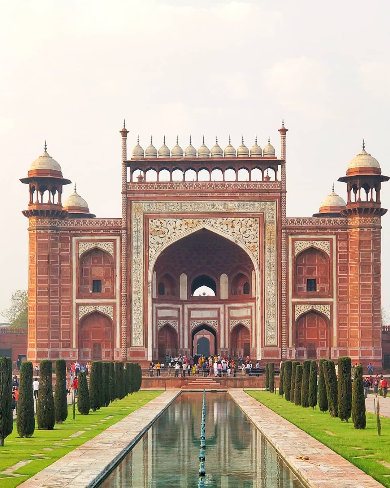
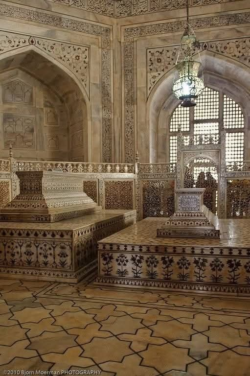
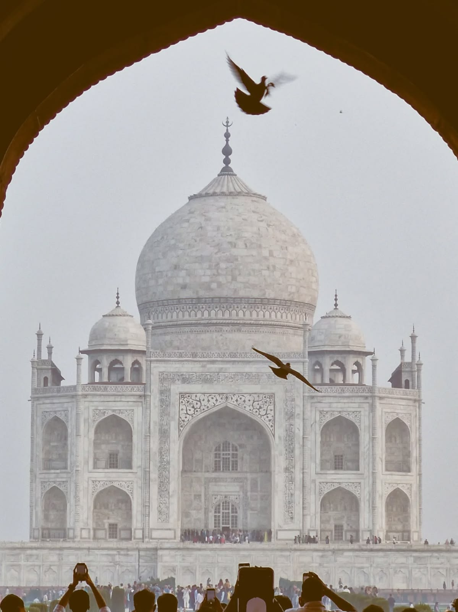

📍
Location
Agra, UP
Uttar Pradesh
⏱️
Best Duration
2–3 days
Including Fort & markets
🌤️
Best Season
Oct – Mar
Cool & clear skies
💰
Entry Fee
₹50 – ₹1300
Indian / Foreign nationals
Wonder of the World
About Taj Mahal, Agra
Standing as a testament to eternal love, the Taj Mahal is one of the most recognisable monuments on earth. Commissioned by Mughal Emperor Shah Jahan in 1632 as a mausoleum for his beloved wife Mumtaz Mahal, this ivory-white marble marvel took over 20,000 artisans and 17 years to complete.
The complex covers 17 hectares and encompasses the main mausoleum, a mosque, a guest house, and lush formal gardens divided by a central reflecting pool. Every detail — from the perfectly symmetrical minarets to the intricate inlay work of precious and semi-precious stones — rewards close inspection. Sunrise and sunset cast the marble in breathtaking hues of pink, orange, and gold.
🌅
Visit at sunrise for the most dramatic golden light and smaller crowds
🔭
The calligraphy around the arches is cleverly sized to appear uniform from the ground
💎
Over 28 types of precious stones are inlaid into the white marble
🌊
The reflecting pool creates a perfect mirror image on calm mornings
🕌
Agra Fort, just 2 km away, offers a view of the Taj from Shah Jahan's prison room
🎨
Mehtab Bagh across the river gives the best sunset silhouette view



Travel Tips
Book tickets online in advance — queues can be 2+ hours on weekends
Carry only a small bag; large bags are not permitted inside
The monument is closed on Fridays for prayers
Hire a local guide from the official counters inside the gate
Stay in Agra the night before so you can catch the 6 AM opening